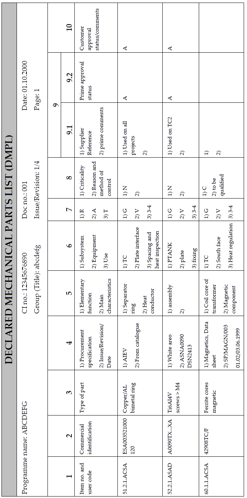

DRD-07.06 - Declared Mechanical Parts List (DMPL) |
| Reference: |
ECSS-Q-ST-70C |
Space product assurance - Materials, mechanical parts and processes |
| ECSS-Q-ST-70-04C |
Space product assurance - Thermal testing for the evaluation of space materials, processes, mechanical
parts and assemblies
|
| ECSS-Q-ST-70-29C |
Space product assurance - The Determination of offgassing products from materials and assembled articles
to be used in a manned space vehicle crew compartment
|
| Purpose: |
The purpose of the DMPL is to have detailed record of all the mechanical parts used to produce the
products of a project or programme.
The data in the DMPL make possible to assess whether the mechanical parts are suitable for a specific
application, at the supplier and customer levels (in the approval status column).
The DMPL is prepared for each "Configuration item" at the relevant stages (e.g. Start, PDR, CDR and
QRR). The DML shall be consolidated by the contract holder on the basis of data obtained from his sub
suppliers and shall reflect the current design at the time of issue.
|
| Content: |
The DMPL format shall include the following statement:
"Mechanical parts are classified into 11groups depending on their type or their main use" (see
Table below). If, for a given project it is considered necessary to create new groups, these shall have
numbers over 61. Items that appear in the EEE parts list should not be repeated here.
For example, heaters, some valves, thermostats, relays, transformer coils and solenoids.
The DMPLformat shall include the following information:
- item number (as the reference of the part in the DMPL); it shall be the same throughout the
duration of the project,
- part designation (commercial identification),
- type of part,
- manufacturer and procurement specifications or standards,
- summary of functions and characteristics use and location,
- environmental code,
- criticality
- supplier reference, prime contractor comments and prime approval status
- customer approval status
Use of codes:
any coding or acronyms used within the list shall be defined within the document. Only those mechanical
parts procured to a specification as a finished product shall be entered on the DMPL.
Use of codes: any coding or acronyms used within the list shall be defined within the DMPL.
Mechanical part group numbers:
| Group number |
Description |
| 51 |
Spacing parts (e.g. washers and spacers) |
| 52 |
Connecting parts (e.g. bolts, nuts, rivets, inserts and clips) |
| 53 |
Bearing parts (e.g. ball-bearings and needle bearings) |
| 54 |
Separating parts (e.g. pyrotechnics, springs and cutters) |
| 55 |
Control parts (e.g. gears) |
| 56 |
Fluid handling parts (e.g. diffusers) |
| 57 |
Heating parts |
| 58 |
Measuring instruments (e.g. gauges and thermocouples) |
| 59 |
Optical passive equipment |
| 60 |
Magnetic parts |
| 61 |
Other parts |
|

Contents of the DMPL
The header information identifies the list as the declared materials list and includes the issue number and the date
of issue. It may include the relevant CI number (configuration item number as per project definition), The materials
group number may also be included here.
1. Item number (applicable at equipment supplier level only)
- This consists of the mechanical part identifier and the user code. It takes the form:
<group number>,<identifier within the group>,<running number>,<user
code>
e.g. 7.2.1.ACSA.
- Characteristics of the item number are:
- Identify the subcontractor shall be identified by an agreed user code for the project.
- One only per mechanical part type.
- Does not change during the life of the mechanical parts list
2. Commercial identification
The correct and standard designation shall be entered such as trade name plus number.
If no trade name exists then the manufacturer's name and number shall be entered.
3. Type of part
The material and surface treatment (if applicable) shall be described.
4. Procurement information
Manufacturer or distributor: name of the manufacturer and name of the distributor if different.
Procurement specification: reference of the procurement specification with issue, revision and date. It may be
replaced by a national or international specification or standard if this exists and identifies the source of
procurement if relevant.
5. Elementary function, main characteristics
The function of the mechanical part shall be entered.
The main characteristics of the mechanical part shall be entered, e.g. number of revolutions per minute for a ball
bearing.
6. Use and location
The codes entered shall define the location of the mechanical part with respect to the:
- subsystem;
- particular piece of equipment (box or item);
- use of the equipment.
7. Environmental code
The environmental code is defined using the following table
| Radiation/UV/ATOX (R)a |
Ambience (A) |
Temperature (T)b,c |
G: Geostationary
L: Low Orbit
B: Radiation belt
I: Interplanetary
P: Planetary
|
S: Outside shadow
L: Outside light
|
V: Vacuum
H: Hermetic
M: Manned
E: Elevated pressure
|
1: 0 to 100K
2: 101 to 200K
3: 201 to 300K
...........
|
For all mechanical parts, a letter is selected from the left-hand column. For mechanical parts on the
surface of the spacecraft, the letter "L" or "S" is added.
- Thermal cycling to be indicated by two values, e.g. 3/5.
- "RT" (room temperature) can be accepted as a code between 283 K (10 °C) and 313 K (40 °C).
|
8.Criticality
Enter "C" for critical or "N" for non-critical. If a mechanical part is considered critical the reason for the
criticality and methods of control shall be entered.
9. Supplier reference, prime comments and prime approval status
Use the supplier reference, prime comments and approval columns to enter any additional information that can be
necessary in order to obtain customer approval.
- This information comprises reference and issue of the RFA or approval, mechanical parts justification file,
evaluation reports and deviation requests.
- Make reference to the relevant test data that demonstrates acceptability of the mechanical part under the
environment conditions and the application relevant to the particular project concerned.
- Use standard abbreviations, defined by the customer, to summarize the acceptance status of a mechanical
part for a particular property.
- In order to justify the use of a material for flammability resistance, list here the material thickness and
height of oxygen share.
- Select the prime approval status code from Table below
The prime approval status code shall be selected from the table.
Approval Status
| Code |
Description |
| A |
Approved. All mechanical parts classified "A" may be used without restriction. |
| X |
Approved with a RFA. These mechanical parts shall be subjected to an evaluation or validation
programme. The RFA number shall be entered as a comment.
|
| W |
Approved with a concession. These mechanical parts do not meet the requirements but are used
for functional reasons. The use of such mechanical parts shall be approved by the customer. The
concession number shall be entered as a comment.
|
| P |
Pending a decision. Mechanical parts for which an evaluation report or a concession is waiting for the
supplier´s provisional or definitive approval.
|
| O |
Open. New mechanical parts or mechanical parts for which investigations and validations are in progress.
|
| R |
Rejected. |
| D |
Deleted. This classification is used for a mechanical part that is no longer used. |
| If approval cannot be given and one of the other codes are entered, comments shall be
entered in the appropriate column.
|
10. The customer approval status code and comments
This code shall be selected from the table.
Additional comments shall be included where appropriate.